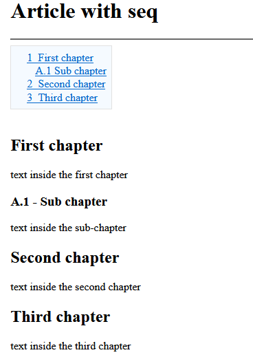

Home
Categories
Dictionary
Download
Project Details
Changes Log
What Links Here
How To
Syntax
FAQ
License
Chapters and titles
1 Chapters and titles XML attributes
2 Chapter elements
3 Title elements
4 Title or chapter sequence ID
4.1 seq attribute
5 Referencing a title or chapter
5.1 Example
5.2 Specifying an id for a chapter or title
5.2.1 Usage of seq as an ID
2 Chapter elements
3 Title elements
4 Title or chapter sequence ID
4.1 seq attribute
5 Referencing a title or chapter
5.1 Example
5.2 Specifying an id for a chapter or title
5.2.1 Usage of seq as an ID
Chapters and titles allow to define sections in the articles ("<Hi>" html tag). There are two ways of specifying a section:
For example, suppose the following sequences of titles:
By default the sequence number (automatically set with the sequences of levels) for a title or chapter is not shown for the title shown in the article text. But if the "seq" attribute is specified for a title or chapter, the specified sequence number will also be shown for this title or chapter.
It is possible to specify an inter-wiki link to a chapter or title in an article. The syntax uses the interwiki link syntax. The "id" element has the following construction:
The article reference can be:
The chapter or title reference can be:
The case for the name of the article (and for the title of the chapter) is not important. For example for the article "my article", all the following references will correctly link to this article:
Not specifying the id of the article will link to a chapter in the current article. For example:
For example suppose the following article:
If the "id" element is not specified, and the "seq" attribute is present, the "seq" value will be used as an ID to reference the title or chapter. For example the following is valid:
- through a "chapter" element
- through a "title" element
Chapters and titles XML attributes
A chapter or title has the following attributes:- "title": the chapter title to be displayed on the HTML output
- "id": (optional) the chapter id, used in lieu of the title to refer to the chapter or title if it exists
- "seq": (optional) allow to force the chapter or title table of content sequence id. See also title or chapter sequence ID
- "keepCase": (optional) true if the chapter or title text should be kept as is (which means that the first character won't be forced as UpperCase in the HTML output)
- "searchable": (optional) false if the title should not be searchable in the search box
- "hr": (optional) true if we should add a thematic break ("hr" element) before the title
Chapter elements
These elements are "chapter" elements in the artile XML file. Nested "chapter" elements will become sub-sections. For example:<article desc="the article"> text before all chapters (article header) <chapter title="first chapter"> text inside the first chapter <chapter title="sub chapter"> text inside the sub-chapter </chapter> </chapter> <chapter title="second chapter"> text inside the second chapter </chapter> </article>
Title elements
Title elements aren't nested and define their own level. For example:<article desc="new article3"> text before all chapters (article header) <title title="first chapter"/> text inside the first chapter <title level="2" title="sub chapter"/> text inside the sub-chapter <title title="second chapter"/> text inside the second chapter </article>Note that if you don't define the level, it will be assumed to be 1.
Title or chapter sequence ID
The sequence ID of a chapter or title will be constructed by default with the sequence of levels from this title or chapter to the root chapter or title. This id will wbe used in the table of contents for the article.For example, suppose the following sequences of titles:
<article desc="the article"> text before all chapters <title title="first chapter"/> text inside the first chapter <title level="2" title="sub chapter"/> text inside the sub-chapter <title title="second chapter"/> text inside the second chapter </article>We will have the following text for the table of contents in the article:
- 1 First chapter
- 1.1 Sub chapter
- 2 second chapter
seq attribute
It is possible to force the sequence ID for a title, by setting a value for the "seq" attribute. For example, suppose the following sequences of titles:<article desc="the article"> <title title="first chapter"/> text inside the first chapter <title level="2" title="sub chapter" seq="A.1"/> text inside the sub-chapter <title title="second chapter"/> text inside the second chapter <title title="third chapter"/> text inside the third chapter </article>We will have the following result for the article:

By default the sequence number (automatically set with the sequences of levels) for a title or chapter is not shown for the title shown in the article text. But if the "seq" attribute is specified for a title or chapter, the specified sequence number will also be shown for this title or chapter.
Referencing a title or chapter
Main Article: Naming constraints
It is possible to specify an inter-wiki link to a chapter or title in an article. The syntax uses the interwiki link syntax. The "id" element has the following construction:
- The article reference, which is the id or desc of the article
- The "#" character
- The title of the chapter
The article reference can be:
- The id of the article if it exists
- The description of the article
- The description of the article where white spaces have been replaced by underscore characters
The chapter or title reference can be:
- The id of the chapter or title (where white spaces have been replaced by underscore characters) it it exists
- The seq of the chapter or title if it exists and the id is not specified
- The title of the chapter or title
- The title of the chapter or title where white spaces have been replaced by underscore characters
The case for the name of the article (and for the title of the chapter) is not important. For example for the article "my article", all the following references will correctly link to this article:
- "my article"
- "my_article"
- "My Article"
- "MY ARTICLE"
Not specifying the id of the article will link to a chapter in the current article. For example:
<ref id="#first chapter" desc="the first chapter" />
Example
Suppose the following article:<article id="thisArticle" desc="my article"> <title title="first chapter"/> ... </article>This article can be referenced through any of the following constructions:
<ref id="thisArticle" /> <ref id="my article" /> <ref id="my_article" />This article title be referenced through any of the following constructions:
<ref id="thisArticle#first chapter" /> <ref id="thisArticle#first_chapter" /> <ref id="my article#first chapter" /> <ref id="my_article#first_chapter" />
Specifying an id for a chapter or title
Specifying an "id" attribute for a chpater or title will allow to use this id to referene this title rather than its title. This allows to keep a constant id to refer to the title or chapter even if the text used for the title change.For example suppose the following article:
<article id="thisArticle" desc="my article"> <title title="first chapter" id="t1" /> ... </article>This article title be referenced through any of the following constructions:
<ref id="thisArticle#t1" /> <ref id="thisArticle#T1" />
Usage of seq as an ID
Main Article: seq attribute
If the "id" element is not specified, and the "seq" attribute is present, the "seq" value will be used as an ID to reference the title or chapter. For example the following is valid:
<article desc="the article"> <title title="first chapter" seq="A.1"/> text inside the first chapter <title title="second chapter"/> Refer to <ref id="#A.1" /> </article>In that case the text shown by default for the reference will be the "seq" value rather than the title or chapter description.
×

Categories: Structure | Syntax